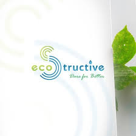

$ whoami
Pranathi Vutukuri
Software Development Engineer
Building reliable backend services and efficient data pipelines with Java, Python, and SQL — five years designing systems that hold up under real business load.
Cumming, GA
> About
about.mdBuilding reliable backend services and efficient data pipelines with Java, Python, and SQL — five years designing systems that hold up under real business load.
Having worked with Python, Java, SQL, and various databases for over five years, my skill set is diverse. My expertise includes cloud platforms like AWS and Azure, data manipulation libraries and BI tools like Tableau and Pandas. I've also successfully implemented ETL processes and developed AI solutions using RASA. I create comprehensive data solutions using Django and React.
My passion lies in transforming complex data into actionable insights, driving informed decision-making and business growth through innovative data strategies — from designing ETL pipelines and optimizing SQL queries, to working with distributed systems on AWS and building internal tools for scalable data processing.
> Skills
skills.jsonLanguages
Data & Cloud
Frameworks & Tools
> Experience
experience.logSoftware Engineer
Jun 2026 – PresentSVT IT Infotech Inc.
- › Design and develop 15+ REST API endpoints for enterprise client applications using Java and Spring Boot, supporting 500+ daily active users.
- › Automate build and deployment pipelines with Azure DevOps CI/CD, cutting release time from 2 days to under 4 hours.
- › Diagnose and resolve production defects across the stack, lowering open bug backlog by 40% within the first two months.
- › Optimize database schemas and queries in SQL Server, improving average API response time by 25%.
Software Development Engineer I
Dec 2024 – Jun 2026Amazon
- › Developed backend services for AWS Health Imaging using Java, Spring Boot, and DynamoDB to support workflow processing and metadata retrieval across distributed systems.
- › Designed and implemented an asynchronous caching service backed by DynamoDB, reducing repeated upstream API calls and improving workflow retrieval efficiency.
- › Built and validated backend features using development environments, integration tests, and Hydra test automation before production deployments.
- › Monitored service health by implementing CloudWatch alarms and resolving workflow reliability issues, including pagination and workflow ordering improvements.
- › Set up and maintained personal development stacks for isolated feature testing and validation.
Java Developer
Jul 2024 – Dec 2024Satek IT Solutions LLC
- › Contributed significantly to the improvement of a Spring Boot website by restructuring controllers, POJOs, and DAOs, leading to a 15% increase in performance.
- › Developed and integrated RESTful APIs using Java and Spring Boot, improving system connectivity with shipping partners and external services.
- › Enhanced database efficiency by fine-tuning indices and restructuring complex SQL Server queries, reducing query execution time by 40%.
- › Achieved a 50% increase in user interaction by implementing UI improvements in an e-commerce web application, utilizing React, Node.js, and Express.js.
- › Substantially reduced website load times through the implementation of caching strategies and optimization of React components for enhanced rendering speed.
Software Developer Intern
Aug 2023 – Dec 2023Onyx CenterSource
- › Developed an AI chatbot using RASA NLU, Python, and PostgreSQL, which automated 80% of customer interactions and reduced manual response effort by 50%.
- › Implemented a system to record and store all chatbot interactions in a database, facilitating the analysis of customer inquiries and responses, and improving the chatbot's accuracy over time.
- › Used sprint planning to create biweekly versions of the responsive application reflecting users' augmentation requests.
- › Integrated the AI chatbot with the GroupPay website, increasing customer self-service adoption, improving user engagement, and streamlining data collection.
- › Conducted performance testing on the chatbot system, simulating 1000+ daily user queries, ensuring 99.9% uptime and response times under 2 seconds.
Software Developer
Nov 2019 – Jul 2022Satkaarya Technologies Pvt Ltd
- › Used Python (Pandas, NumPy, Matplotlib) for data cleaning and analysis, revealing customer behavior trends from large datasets.
- › Implemented Spark and PySpark solutions for big data processing, reducing large-scale dataset processing time by 40%.
- › Performed exploratory data analysis with Jupyter, driving data-informed strategies across the SDLC through cross-functional collaboration.
- › Optimized SQL queries for ETL processes, boosting data pipeline efficiency by 30% and ensuring downstream data accuracy.
- › Created interactive Power BI and Tableau dashboards, improving decision-making efficiency by 25% through actionable data insights.
> Projects
projects/Onyx CenterSource
AI support chatbot built with RASA NLU, Python, and PostgreSQL for GroupPay's customer service flow.
→ Automated 80% of customer interactions, increasing profits by 40%.
Spoonful of Hyderabad
Digital marketing website for food bloggers, designed and built end to end.
→ Grew the client's social following and opened new business opportunities.

Ecostructive
Waste-management web app with user-specific garbage collection requests and predictive trend forecasting.
→ Power BI dashboards drove route optimization and cost reduction.
eCompare
Price comparison platform aggregating data via web scraping, with ML-based voice and text search.
→ Power BI dashboards used to optimize routes and reduce costs.
> Education
education.yamlMaster's in Information Technology and Management
The University of Texas at Dallas
Bachelor's in Information Technology
JNTUH College of Engineering